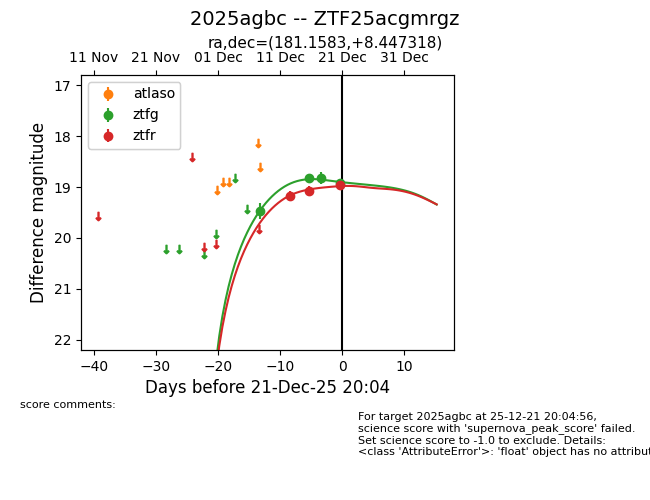
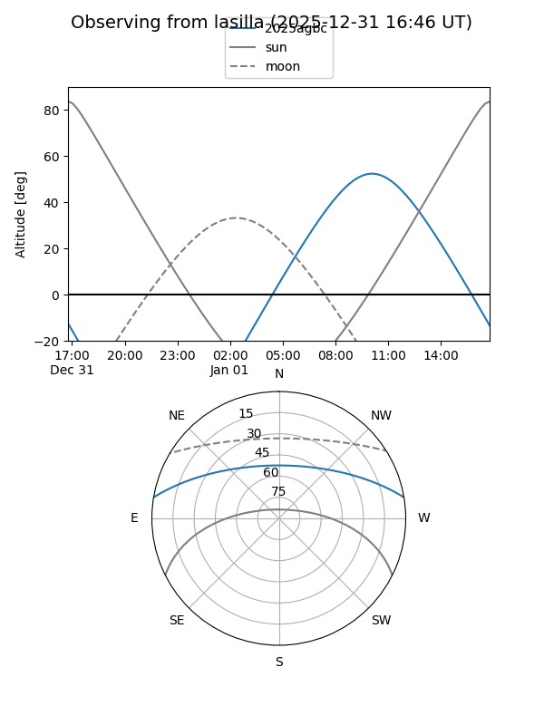
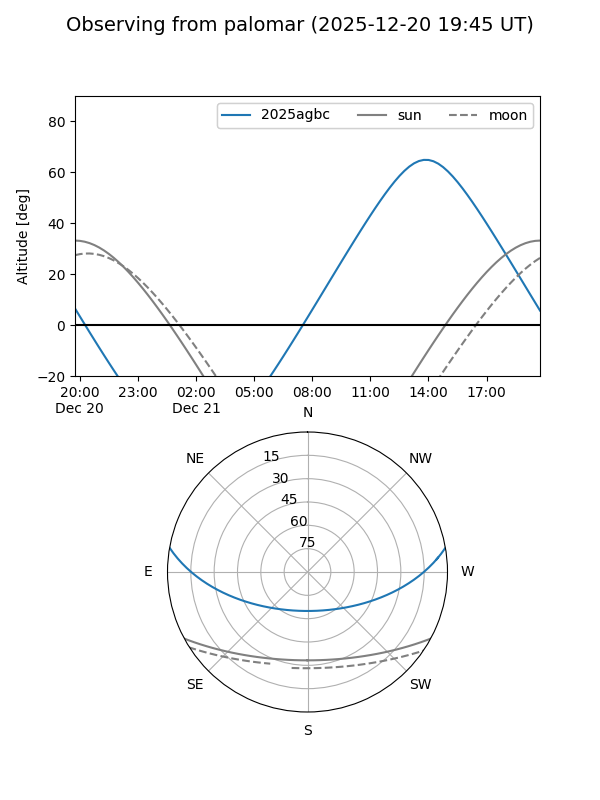
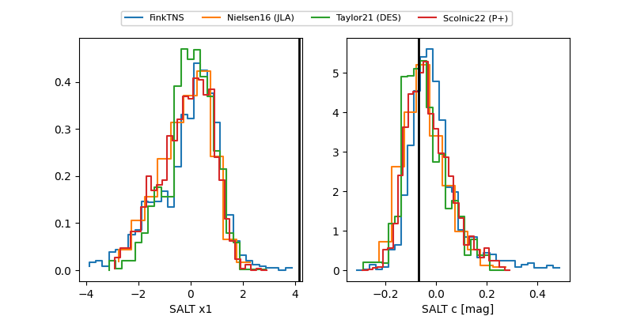

2025agbc
Target 2025agbc at 2025-12-22 20:23
Aliases and brokers:
FINK: fink-portal.org/ZTF25acgmrgz
Lasair: lasair-ztf.lsst.ac.uk/objects/ZTF25acgmrgz
ALeRCE: alerce.online/object/ZTF25acgmrgz
TNS: wis-tns.org/object/2025agbc
YSE: ziggy.ucolick.org/yse/transient_detail/2025agbc
alt names
ZTF25acgmrgz (ztf,fink_ztf)
2025agbc (tns,yse)
Coordinates:
equatorial (ra, dec) = 181.1583,+8.44732
equatorial (HMS+DMS) = 12:04:38.00,+08:26:50.35
galactic (l, b) = (270.1021,+68.28296)
Flags:
confirmed ia
Photometry:
last ztfg=18.92, ztfr=18.95
4 ztfg, 3 ztfr detections
Lightcurve

Visibility


Additional plots
